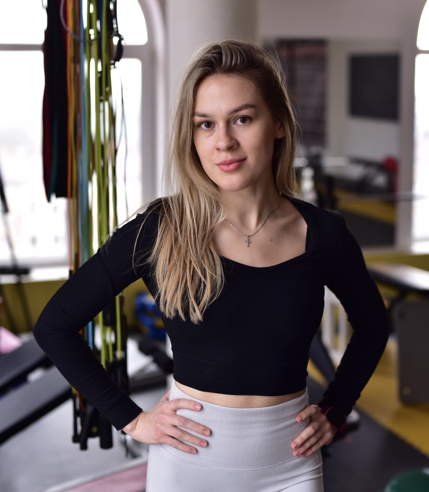

Поэтапный план упражнений для естественных родов и кесарева сечения,
с разбором частых послеродовых состояний и признаков,
при которых нужно обратиться к врачу.
Основано на: клинических рекомендациях WHO, ACOG, NICE, ACSM
Период: 0–6 месяцев после родов
Формат: практическое руководство с упражнениями и красными флагами
Документ является общим ориентиром и не заменяет консультацию врача или специалиста по работе с тазовым дном.
Индивидуальные сроки восстановления и допустимая нагрузка могут отличаться. Перед началом занятий на любом этапе — и при появлении тревожных симптомов — обратитесь к специалисту.

Всем привет! Меня зовут Кузменькова Елена.
Я фитнес-тренер, инструктор ЛФК, акушерка и мама. Полгода назад у меня появился сын путем кесарева сечения, и мне очень хотелось собрать всю основную информацию о восстановлении в одном месте.
Тело проходит через значительную перестройку во время беременности и родов, и его восстановление
требует времени, терпения и постепенной, грамотно выстроенной нагрузки. Этот документ описывает
два параллельных маршрута восстановления — после естественных родов и после
кесарева сечения.
3фазы восстановления
6месяцев — полный план
100%женщин — растяжение белой линии
Выберите свой маршрут. Часть I — для естественных родов, Часть II — для кесарева сечения.
Двигайтесь по фазам последовательно. Переход — по готовности тела и разрешению врача.
Следите за красными флагами. Это инструмент безопасности.
Прочитайте Часть III. Актуальна для любого типа родов.
Важное примечание. Перед началом занятий — консультация с врачом или специалистом по работе с тазовым дном обязательна.
ЧАСТЬ I
После естественных родов
Восстановление тканей промежности, активация мышц тазового дна и кора — от первых дней до полноценной тренировочной нагрузки через полгода.
01
Раннее восстановление
0–6 недель
02
Укрепление
6–12 недель
03
Возвращение к активной жизни
3–6 месяцев
Часть I · Естественные роды
01
Раннее восстановление
0–6 недель после родов
🚩 Немедленно прекратить и обратиться к врачу, если:
Усиление боли в промежности
Возобновление ярко-красного кровотечения
Чувство тяжести или «выпадения» во влагалище
Признаки инфекции: лихорадка, неприятный запах, покраснение и боль в области швов
Цель фазыВосстановление тканей промежности, мягкая активация мышц тазового дна и кора. Избегать напряжения.
Разрешённые упражнения
🌬️
Дыхание животом (диафрагмальное)
нажмите для техники
⏳
Изолированные сокращения (медленные)
нажмите для техники
🔄
Наклон таза
нажмите для техники
🚶♀️
Ходьба
нажмите для техники
Часть I · Естественные роды
02
Укрепление
6–12 недель после родов
Требуется разрешение врача
🚩 Обратиться к врачу или специалисту по работе с тазовым дном, если:
Недержание мочи во время упражнений
Постоянная боль в спине или области таза
Плохое заживление швов
Цель фазыУвеличение функциональной нагрузки, укрепление мышц кора и тазового дна.
Разрешённые упражнения
⚡
Изолированные сокращения (быстрые)
нажмите для техники
⬆️
Ягодичный мостик
нажмите для техники
🐞
Подъём ног («мёртвый жук»)
нажмите для техники
🏊
Аэробные нагрузки
нажмите для техники
Часть I · Естественные роды
03
Возвращение к активной жизни
3–6 месяцев после родов
🚩 Вернуться на предыдущий этап, если:
Любое недержание во время бега или прыжков
Ощущение тяжести или давления внизу живота / влагалища
«Конус» или «бугор» на животе сохраняется
Цель фазыПолное восстановление силы и выносливости, возвращение к привычным видам спорта.
Прогрессия упражнений
🏃♀️
От ходьбы к бегу
нажмите для техники
💪
Упражнения на мышцы кора
нажмите для техники
ЧАСТЬ II
После кесарева сечения
Восстановление после кесарева сечения требует больше времени. Шов, слабость мышц живота и риск спаек требуют особой осторожности.
01
Раннее восстановление
0–6 недель
02
Восстановление функции
6–12 недель
03
Возвращение к активной жизни
3–6 месяцев
Часть II · Кесарево сечение
01
Раннее восстановление
0–6 недель после операции
Начинать только с разрешения врача
🚩 Немедленно прекратить и обратиться к врачу, если:
Покраснение, отёк, боль, гнойное отделяемое из шва
Расхождение шва (дегисценция)
Возобновление кровотечения
Лихорадка
Цель фазыЗаживление раны, профилактика спаек, мягкая активация мышц тазового дна. Полный отказ от напряжения брюшной стенки.